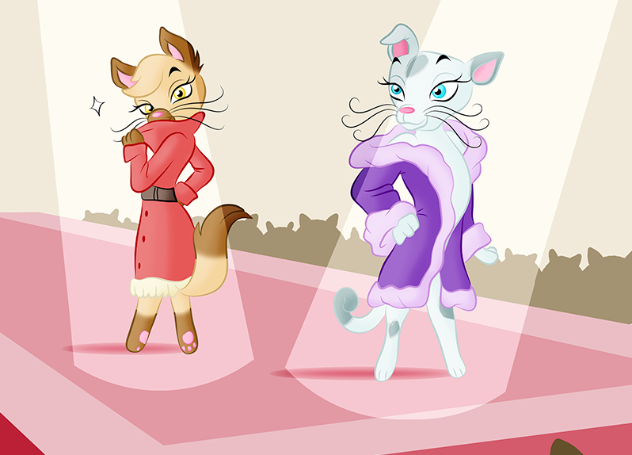

Events
Events
- Sports day - 15th July 2017
- Javelin
- Shot putt
- Archery
- Hurdles
- 100m sprint
- 1500m long-distance
- Triathlon (run up tree - take acorn & come back down, jump over ditches filled with water, 100m sprint)
- Fashion Catwalk - 6th August 2017
See the model cats parade down on the cat walk - dressed in the latest styles of the season.
 - Master Cat Chef - 20th September 2017
- Teacher of the year award - 15th August 2017
- Best student of the year award - 15th August 2017
- Citizen of the year award - 15th August 2017
Award to the cat with admirable ethics, who is helpful and respectful towards their fellow felines.
National holidays
Christmas: 25th December 2016
Eggster Sunday: 27th March 2017 (enjoy chicken eggs)
Purr City Bank Holiday Mondays: 2 May, 30 May, 29 August, 26 December 2016
Cook innovative fish and chicken dishes! Fish can be cooked in a variety of ways: steamed, grilled, fried, fish cakes, fish pie, fish casserole etc.
National Awards of the Year
Most inspirational teacher, voted by cats from Purr City Academy.
Award to the student who has made considerable progress, who is determined, hard-working and an inspiration to other cats.